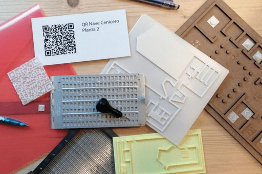

MiméticasLab es un grupo de investigación, abierto y colaborativo, cuya finalidad es conseguir que el patrimonio artístico sea más accesible para las personas con discapacidad visual. Somos un colectivo sin ánimo de lucro y todos nuestros proyectos son de licencia libre.
Actualmente, tenemos abiertas dos líneas de investigación: por un lado, la creación de modelos táctiles mediante técnicas de fabricación digital (impresión 3D y corte láser); y por otro, la descripción colectiva de obras de arte que, huyendo de una mirada única, integre diferentes interpretaciones y puntos de vista.
⇧ Volver arriba
PLANIFICACIÓN DEL PROYECTO
Nuestro objetivo era diseñar una herramienta que permitiese una visita autónoma al edificio pensada para todo tipo de público, no solo para personas con discapacidad visual. Como todos nuestros proyectos, incluiría una accesibilidad de bajo coste y rápida de implementar, buscando la máxima simplicidad y facilidad de uso.
Partiendo estas premisas, ideamos el proyecto “Medialab Prado Accesible”, formado por:
⇧ Volver arriba
ENTREVISTAS Y DESCRIPCIONES
Empezamos grabando en audio una serie de entrevistas a personas que trabajan o frecuentan Medialab, pidiendo que describiesen el edificio y sus espacios. Esto nos permitió construir una narración colectiva surgida de la propia comunidad, más rica y completa que una simple descripción individual, al incluir diferentes observaciones y puntos de vista.
Transcribimos estas entrevistas y redactamos cuidadosamente los textos, organizando toda la información recopilada y añadiendo datos para ayudar a la orientación en el espacio, así como detalles sobre la historia del edificio y su uso actual. Nuestro objetivo era crear un relato pensado para todo tipo de público, en el que la información que se suele dar en una visita guiada quedase integrada orgánicamente con las descripciones y la orientación espacial.
Con los audios, montamos un breve documento sonoro como testimonio del proceso de trabajo, que contiene pequeñas intervenciones con las voces de todas las personas que participaron.
Enlace a la transcripción del audio
Agradecemos a Amaru, Joaquim, Clara, Gabriel, Cristina, Silvia, Alba, Adrián, Iris, Rodolfo, Estefanía, Wilma, Manuel y Meme su colaboración en este proyecto.
⇧ Volver arriba
PÁGINA WEB Y CÓDIGOS QR
Creamos una página web en GitHub de código abierto para alojar los textos, a la que se accede mediante códigos QR colocados en diferentes puntos del edificio, utilizando simplemente el escáner y el navegador del propio móvil. Esta solución evita el esfuerzo extra de tener que aprender a manejar un sistema tradicional de audioguías o una app específica.
Toda la información está en formato texto, con el fin de que sea accesible para las personas sordas, así como para los lectores de pantalla que usan las personas ciegas. Las imágenes y los logos también están descritos, y el diseño de la página está pensado para permitir una navegación rápida, intuitiva y amigable.
⇧ Volver arriba
PLANOS TÁCTILES
Los planos táctiles, uno por cada planta, se diseñaron para ser fabricados en madera mediante cortadora láser. Son lo bastante grandes para apreciar todos los detalles y al mismo tiempo ligeros para poder trasladarlos de un lugar a otro.
Están hechos en dos alturas: por un lado la base y por otro las paredes, más levantadas. Para establecer nítidamente el emplazamiento de cada espacio, añadimos diferentes texturas y elementos en relieve, cuidando que su interpretación no dejase lugar a dudas:
⇧ Volver arriba
UN PROYECTO DE LICENCIA LIBRE
Este proyecto ha sido realizado por las integrantes de MiméticasLab, con una licencia Creative Commons CC BY-NC-SA (Atribución-No comercial-Compartir igual).
Esta licencia permite a terceros copiar, distribuir, exhibir la obra y hacer obras derivadas para fines no comerciales, siempre y cuando se reconozca y cite a la asociación MiméticasLab como creadora original del proyecto y que las obras derivadas se distribuyan bajo estos mismos términos.
Si quieres contactar con nosotras, puedes escribirnos a info@mimeticaslab.org o visitar nuestra página web www.mimeticaslab.org
Para descargar los planos táctiles (corte láser) y los iconos incluidos en ellos (impresión 3D) haz clic en estos enlaces:
⇧ Volver arriba
⇦ Anterior: Menú
⇨ Siguiente: Entorno y descripción general